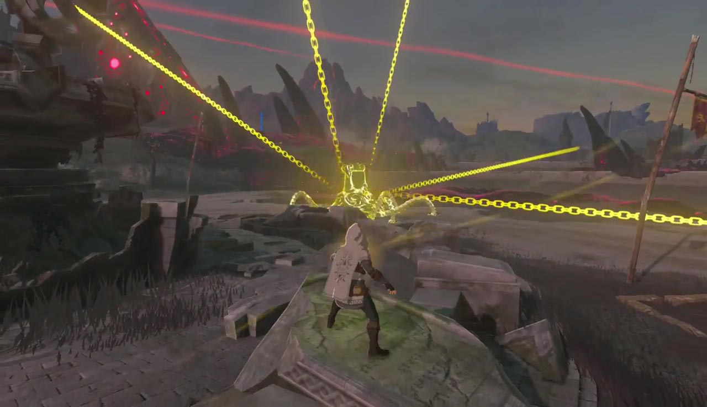
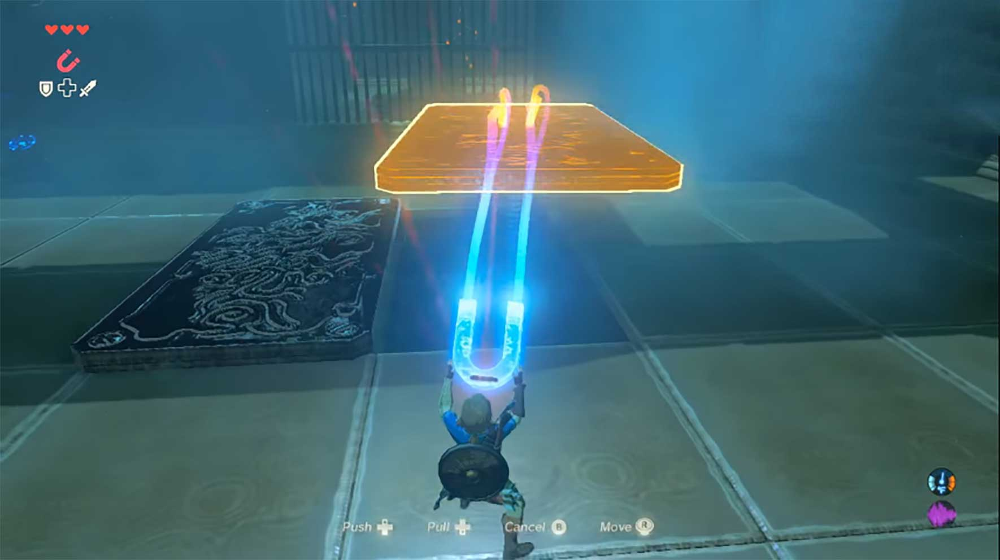
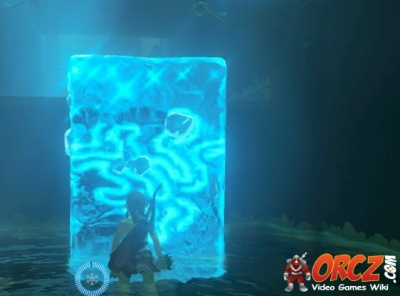

Stasis
The power to stop time! Use stasis to manipulate the physics of objects around you or stop an enemy in their track. Great to use when in a pinch.
Magnesis
The power to move metal! Whether grabbing an item or chest in a hard-to-reach location, or utilizing a heavy metal object to drop on foes-- the uses of this ability are endless.

Cryonis
The power to create land out of water! Scared to swim the distance? Fear not, cryonis will lead the way! Also useful in flipping objects or creating walls to avoid danger.